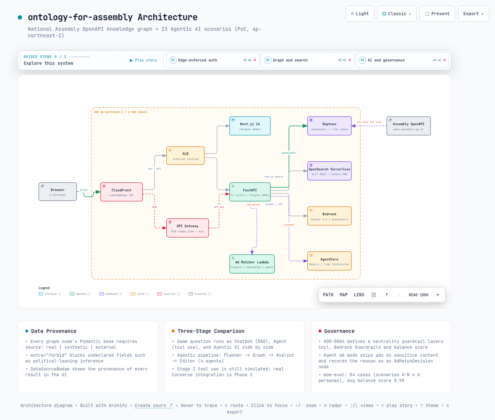

01어떤 문제를 푸는가
이 절은 프로젝트가 왜 만들어졌는지를 다룹니다. 국회가 공개하는 데이터와 언론사의 실제 업무 사이에 어떤 간극이 있는지부터 살펴봅니다.
이 프로젝트가 푸는 문제는 "한국 언론사가 국회 공공 데이터를 실제 업무 도구로 쓸 수 있는가"입니다. 국회 열린데이터광장(open.assembly.go.kr)은 의안, 의원, 표결, 위원회, 정당 데이터를 OpenAPI(누구나 호출할 수 있게 공개된 API)로 제공합니다. 하지만 원천 데이터만으로는 편집국의 취재 판단, 독자 서비스, 정책 인텔리전스 같은 뉴스룸 업무와 연결되지 않습니다.
ontology-for-assembly는 이 간극을 지식그래프 + Agentic AI 조합으로 메우는 30-60분 PoC(개념 검증) 데모입니다. 지식그래프는 데이터를 노드와 관계의 그물로 저장하는 방식입니다. Agentic AI는 LLM이 스스로 계획을 세우고 여러 단계를 이어서 수행하는 방식을 말합니다.
1.1 세 가지 목표와 여섯 페르소나
설계 스펙(docs/superpowers/specs/2026-05-13-ontology-assembly-design.md)이 명시한 목표는 세 가지입니다. 편집국 생산성(내부), 독자 서비스 차별화(B2C), 정책 인텔리전스(B2B)를 하나의 데이터 기반 위에서 동시에 시연하는 것입니다.
그래서 페르소나(데모를 바라보는 가상의 사용자 역할)는 내부 3개와 대고객 3개로 나뉩니다. 내부는 편집국, 데이터/AI, 광고/세일즈입니다. 대고객은 일반 독자, 유료 구독자, 기업/B2B 정책 인텔리전스입니다.
여섯 페르소나는 같은 그래프를 서로 다른 KPI 가중치와 어조로 봅니다. 페르소나 정의의 단일 진실원(같은 정보를 한 곳에서만 관리하는 기준 위치)은 api/services/persona.py:PERSONA_REGISTRY이며 6개 항목이 등록되어 있습니다.
1.2 이 문서가 집중하는 부분
저장소는 자매 프로젝트 ontology-for-gcc(plan1-foundation 브랜치)를 차용 베이스로 삼았습니다. README와 CLAUDE.md 모두 디렉토리 구조, 6-stack CDK, 프로젝트 하니스를 그대로 가져왔다고 명시합니다. 도메인만 국회/언론으로 교체했습니다.
그래서 이 문서는 차용된 골격이 아니라 이 프로젝트만의 차별점을 중심으로 분석합니다. 실제 국회 OpenAPI 데이터, 3단계 진화 비교, 광고 매칭 거버넌스, 출처 프로버넌스 배지 네 가지입니다.
핵심: 이 PoC의 주제는 모델 성능이 아닙니다. 민감한 공공 데이터를 다루는 Agentic AI에 출처 투명성과 거버넌스를 코드 레벨에서 강제하는 방법입니다.
02어떻게 동작하는가: 온톨로지와 데이터 출처
이 절은 데이터가 어떤 모양으로 저장되는지를 다룹니다. 어떤 종류의 데이터가 있고, 진짜 데이터와 만든 데이터를 어떻게 구분하는지 살펴봅니다.
2.1 31개 클래스, 코드가 스키마의 단일 진실원
온톨로지 클래스(그래프에 저장되는 데이터 종류의 정의)는 data/schemas.py에 Pydantic(파이썬의 데이터 검증 라이브러리) 모델로 정의되어 있습니다. 클래스는 모두 몇 개일까요? GraphNode base를 상속하는 클래스가 정확히 31개입니다.
Object Explorer가 쓰는 api/services/objects_catalog.py:CLASS_GROUPS의 그룹 합계도 31로 일치합니다. 아래 표에서는 31개 클래스가 어떤 도메인 그룹으로 나뉘는지를 봅니다.
| 그룹 | 클래스 수 | 클래스 |
|---|---|---|
| 인물, 조직 | 6 | Person, Party, Staff, Committee, District, Term |
| 입법 | 7 | Bill, Law, Amendment, Vote, Statement, Session, Budget |
| 주제, 외부 | 6 | Topic, Policy, Agency, ElectionResult, PollResult, SocialSignal |
| 미디어 | 2 | Article, Tag |
| 독자 측 | 5 | Reader, ReaderProfile, SubscriptionTier, ReadingEvent, Bookmark |
| 광고 | 4 | Advertisement, AdInventory, AdImpression, AdMatchDecision |
| 분석 메타 | 1 | Cluster |
저장소의 ontology/classes, ontology/relations 디렉토리는 현재 비어 있는 스캐폴드이며, CLAUDE.md가 이를 명시합니다. 스키마의 실제 단일 진실원은 data/schemas.py(Pydantic)와 api/services/objects_catalog.py(탐색기 메타)입니다. YAML 온톨로지 파일을 기대하고 열면 빈 디렉토리를 만나게 됩니다.
2.2 데이터 코호트: real / synthetic / external 출처 태깅
이 프로젝트의 두드러진 설계는 데이터 출처를 스키마 레벨에서 강제한다는 점입니다. 모든 노드의 base 클래스가 source 필드를 필수로 요구합니다. 또한 extra="forbid" 설정이 미정의 속성(예: 정치 성향 추론 필드)의 저장 자체를 차단합니다.
class GraphNode(BaseModel):
# `source` 필드 필수 - DataSourceBadge UI 노출에 사용
# `extra="forbid"` - 정치 성향 추론 필드 등 미정의 속성 차단
model_config = ConfigDict(extra="forbid", str_strip_whitespace=True)
source: Source # "real" | "synthetic" | "external"세 코호트(같은 기준으로 묶은 데이터 집단)는 어댑터 디렉토리로도 분리되어 있습니다. data/real/은 국회 OpenAPI 어댑터(bill, member, vote, committee, session, party, agency)로 실 데이터를 가져옵니다. 여기에 22대 의원 286명(members_22.json)이 포함됩니다.
data/synthetic/은 독자, 광고, 기사, 토픽을 합성 생성합니다. data/external/은 네이버 뉴스와 여론조사의 ETL(외부 데이터를 추출하고 변환해 적재하는 파이프라인)을 담당합니다.
페르소나와 시나리오 조합에 따라 어느 코호트를 조회할지는 api/services/cohort.py가 단일 지점에서 결정합니다. 이 결정은 Cypher WHERE 절(n.source IN [...])로 변환됩니다. 프론트엔드에서는 web/components/DataSourceBadge.tsx가 모든 화면에 출처 배지를 그려, 시연 중 어떤 결과가 실 데이터이고 어떤 결과가 합성인지 즉시 구분됩니다.
2.3 아키텍처
인프라는 AWS CDK v2의 6개 스택으로 배포됩니다(infra-cdk/bin/assembly.ts 기준 network, data, ai, compute, edge, observability). FastAPI 백엔드(21개 라우터)와 Next.js 14 프론트엔드가 ECS Fargate ARM64에서 돌고, CloudFront와 Lambda@Edge JWT가 앞단을 막습니다.
그래프 저장소는 Neptune이며 openCypher(그래프 질의 언어)로 조회합니다. 검색은 OpenSearch Serverless에서 Nori BM25(한국어 형태소 기반 키워드 검색)와 Cohere KNN(임베딩 벡터 유사도 검색)을 함께 씁니다. 두 결과는 RRF(서로 다른 검색 순위를 하나로 합치는 융합 방법)로 합친 뒤 rerank-v3로 재정렬합니다.
LLM 계층은 Bedrock Sonnet 4.6과 AgentCore Memory / Code Interpreter입니다. 단, AgentCore Memory는 CDK placeholder이고 Code Interpreter는 mock 응답에만 존재하는 계획 항목으로, 실제 API 통합 코드는 아직 없습니다. B2B 페르소나는 별도로 API Gateway Usage Plan + API Key 경로를 탑니다.
03딥다이브 1: 세 가지 AI 방식 비교 (Chatbot vs Agent vs Agentic AI)
이 절은 같은 질문에 세 가지 AI 방식이 어떻게 다르게 답하는지를 다룹니다. 이 비교가 데모의 첫 번째 메인 메시지입니다.
시나리오 B는 같은 질문을 세 가지 모드로 동시에 실행해 한 화면에서 나란히 비교합니다. 모드 분기는 api/services/three_stage.py가 담당합니다. 세 번째 모드의 다중 에이전트 파이프라인은 api/services/multi_agent.py:run_agentic_pipeline이 실행합니다.
용어를 먼저 풀면, RAG는 검색으로 찾은 문서를 근거로 답을 생성하는 방식입니다. Tool Use는 LLM이 미리 정의된 도구(함수)를 호출해 작업하는 방식입니다. 아래 표에서는 각 단계의 실행 흐름과, 데모가 일부러 드러내는 한계를 봅니다.
| 단계 | 방식 | 실행 흐름 | 한계 시연 포인트 |
|---|---|---|---|
| Stage 1 Chatbot | RAG | OpenSearch top-K 검색 결과를 컨텍스트로 Bedrock 1회 호출 | 검색된 문서 밖의 질문에 답하지 못함 |
| Stage 2 Agent | Tool Use | search_bills, get_proposers, cosponsor_network, analyze_votes 등 사전 정의 도구를 질문 의도에 따라 순차 호출 | 도구 목록 안에서만 행동, 계획 수립 없음 |
| Stage 3 Agentic AI | 다중 에이전트 | Planner(과제 분해) → Graph(Cypher 변환과 Neptune 조회) → Analyst(해석과 가설) → Editor(기사 초안과 후속 취재 포인트) | 에이전트 간 재질의를 포함한 자율 협업 |
4개 에이전트의 역할 프롬프트는 multi_agent.py:AGENT_PROMPTS에 상수로 정의되어 있습니다. Analyst는 필요 시 "Graph 에이전트에 재질의 필요"라는 형식으로 그래프 단계에 되물을 수 있습니다.
모든 LLM 호출은 api/services/bedrock.py:invoke()/invoke_stream() 단일 진입점을 거칩니다. DEMO_PUBLIC_MODE=true일 때는 결정적 demo mock(항상 같은 답을 돌려주는 가짜 응답)으로 동작합니다. 트리거는 자격증명 유무가 아니라 이 환경 변수이며, 이 모드 덕분에 오프라인에서도 데모와 테스트가 재현됩니다.
스트리밍은 SSE(서버가 응답을 조각 단위로 흘려보내는 방식)로 통일되어 있습니다. 이벤트 어휘(phase|delta|log|result|error|done)는 api/routers/chat.py docstring이 단일 진실원입니다.
three_stage.py:stage2_agent의 docstring은 "실 Bedrock Converse tool use API 통합은 Phase 2"라고 명시합니다. 현재 코드는 질문 의도를 규칙 기반으로 판별해 도구를 순차 호출하는 흐름을 재현합니다. LLM이 도구 선택을 스스로 하는 실 Converse 통합은 계획 단계이므로, 이 코드를 참조 구현으로 가져갈 때 혼동하기 쉽습니다.
04딥다이브 2: 광고 매칭과 중립성 가드레일
이 절은 민감한 기사에서 AI가 광고와 답변을 어떻게 조심스럽게 다루는지를 봅니다. 광고 매칭 거버넌스가 데모의 두 번째 메인 메시지입니다.
4.1 광고 매칭 매트릭스 (시나리오 L)
api/services/ad_matcher.py는 같은 기사와 같은 후보 광고 풀에 대해 세 가지 매칭 모드를 실행하고(compare_modes()), 결정 차이를 비교해 보여줍니다. 아래 표에서는 세 모드가 민감 콘텐츠를 어떻게 다르게 처리하는지를 봅니다.
| 모드 | 판단 근거 | 민감 콘텐츠 처리 |
|---|---|---|
| keyword | 토픽-카테고리 단순 매핑, 점수 0.3~0.5 수준 | 감지 불가, 정치인 비위 기사에도 광고 매칭 |
| embedding | 임베딩 코사인 유사도(실 환경 Cohere embed-v4, mock은 결정적 해시 벡터) + avoid_topics 감점 | 의미 유사성은 잡지만 윤리, 평판 판단 불가 |
| agent | 민감 패턴 감지 + avoid_topics 엄격 적용 + 카테고리 점수 | 민감 콘텐츠 감지 시 chosen_ad_id=None으로 광고 노출 자체를 생략 |
agent 모드가 광고를 생략하면 그 근거 문장(reasoning trace)이 AdMatchDecision 노드에 저장되어 운영 콘솔에서 추적됩니다. 즉 "왜 이 지면에 광고가 안 나갔는가"가 그래프에 기록으로 남습니다.
매칭 실행은 API 응답과 분리된 별도 Ad Matcher Lambda로 동작합니다. 모드는 AD_MATCH_MODE 환경 변수와 UI 토글로 전환합니다. 데모 샘플 기사는 몇 개일까요? Agent가 거절해야 하는 3종(scandal, tragedy, minor_victim)과 안전 매칭 3종으로 총 6개가 준비되어 있습니다.
README와 CLAUDE.md는 자동 광고 생략 대상을 비극, 정치인 비위, 미성년 피해자 3종으로 서술하지만, 코드의 SENSITIVE_PATTERNS에는 controversy(폭로, 의혹, 논란)를 포함해 4종의 정규식 패턴이 정의되어 있습니다. 이 문서는 코드 기준으로 4종으로 봅니다.
4.2 정치 중립성 가드레일 6개 레이어 (ADR-0004)
정치 데이터를 다루는 만큼 중립성은 데모 가능성의 전제 조건으로 취급됩니다. ADR(설계 결정을 남기는 기록 문서)-0004(docs/decisions/0004)는 다층 방어 6개 레이어를 정의합니다.
- Layer 1 - Bedrock Guardrails 리소스. 정당명 + 비방 조합, 정치인 모욕을 차단하고 시나리오 B, C, I, K의 입력과 출력 양방향에 적용됩니다.
- Layer 2 - 모든 LLM 호출에 자동 첨부되는 중립성 system prompt suffix(NEUTRALITY_GUARD_SUFFIX).
- Layer 3 - 응답마다 자동 계산되는 political_balance_score. 한쪽 정당만 부각되면 UI가 경고하고, 평균 0.8 미만이면 CloudWatch 알람이 울립니다.
- Layer 4 - 클래스 레벨 필드 금지. Reader.political_leaning 같은 정치 성향 추론 필드는 생성과 저장이 금지되며, extra="forbid"가 이를 스키마에서 강제합니다.
- Layer 5 - 라이브 시연은 사전 검증된 질문 풀(scripts/eval_wow_queries.py)만 사용합니다.
- Layer 6 - 위 4.1의 광고 매칭 거버넌스입니다.
원칙: 거버넌스를 프롬프트 지시에만 맡기지 않고, 스키마(extra="forbid"), 메트릭(balance score), 인프라(Guardrails, 알람)의 세 층에 나눠 강제하는 것이 이 설계의 요지입니다.
0523개 시나리오 한눈에 보기
이 절은 데모에 들어 있는 시나리오 전체를 한눈에 정리합니다. 23개를 하나씩 나열하는 대신 구현 패턴 8가지로 묶어서 봅니다.
시나리오 목록의 단일 진실원은 web/components/Sidebar.tsx:SCENARIOS 배열이며 정확히 23개(A-W)가 등록되어 있습니다. 설계 스펙은 base 14개(A-N)였습니다. O-S는 사용자 요청 확장으로, T-W는 실 그래프 엣지 위의 고급 인사이트로 구현 과정에서 늘었습니다.
아래 표에서는 23개 시나리오가 어떤 8가지 패턴으로 묶이는지, 각 패턴을 어느 백엔드 파일이 받치는지를 봅니다.
| 패턴 | 시나리오 | 백엔드 | 대표 기술 |
|---|---|---|---|
| 하이브리드 검색, 그래프 탐색 | A, O | search.py, relations.py | BM25(Nori) + Cohere KNN + RRF + rerank-v3, 두 인물 간 그래프 경로 |
| 3단계 대화 비교 | B | chat.py | three_stage + multi_agent, SSE 스트리밍 (AgentCore Memory는 계획 항목) |
| LLM 인사이트, 차트, 타임라인 | C, G, K, M, N | insights.py 외 시나리오별 라우터 | Sonnet 4.6 스트리밍 요약, 표결 이상치 탐지 (Code Interpreter 차트는 계획 항목) |
| 페르소나 매칭, 룩어라이크 | D, F | persona_match.py, lookalike.py | 6 페르소나 KPI 가중치, 클러스터 매칭 + cross-party 신호 |
| 통계, 지도, 외부 신호 | E, H, J | cluster.py, district_map.py, external_signal.py | KMeans + 정치 중립 LLM 라벨, 17개 시도 choropleth, 뉴스/SNS/여론조사 융합 |
| 중립성 가드레일 가시화 | I | neutrality.py | Bedrock Guardrails + political_balance_score 노출 |
| 광고 매칭 거버넌스 | L | ad_match.py + Ad Matcher Lambda | keyword / embedding / agent 3-way, Agent 광고 생략 trace |
| 범용 LLM narrative, 실 엣지 인사이트 | P, Q, R, S / T, U, V, W | members.py + insight_generic.py / insights_advanced.py | 전용 라우터 없이 POST /api/insight 재사용 / 약 74,000개 real 엣지 openCypher (정당 응집도, 영향력 랭킹, 표결 cluster, swing voter) |
23개 시나리오가 21개 라우터와 1:1이 아니라는 점도 코드 이해에 중요합니다. P, Q, R, S 4개는 전용 라우터 없이 의원 디렉토리 데이터와 범용 insight_generic.py로 백킹됩니다.
시나리오 페이지 외에 다섯 가지 화면이 함께 배포됩니다. 31클래스 Object Explorer, 온톨로지 관계 그래프(mindmap), 의원 디렉토리(286명, 9개 지표), 운영 콘솔(5 패널), 코드 지식 그래프(codegraph) 페이지입니다.
06어떻게 배포하고 검증하는가
이 절은 이 PoC를 실제로 띄우고 품질을 확인하는 절차를 다룹니다. 배포, 데이터 적재, 자동 평가 순서로 살펴봅니다.
배포는 ap-northeast-2 리전에서 npx cdk deploy --all로 6개 스택을 올리는 것으로 시작합니다. VPC는 새로 만들지 않고 자매 프로젝트들과 공유하는 VPC를 import합니다(ADR-0006). Neptune은 private subnet에 있어 직접 접근이 불가능합니다.
그래서 데이터 적재는 one-shot ECS 태스크(한 번 실행되고 종료되는 컨테이너 작업)로 실행합니다. 이 태스크는 API 컨테이너 이미지를 그대로 재사용합니다.
aws ecs run-task --cluster assembly-dev-cluster --task-definition assembly-dev-api \
--overrides '{"containerOverrides":[{"name":"api","command":
["python","-m","data.load","--source","all","--to","s3",
"--bucket","assembly-dev-synthetic-data","--neptune","--opensearch"]}]}'품질 게이트는 두 겹입니다. CI는 push/PR마다 4개 job(python-ast, tsc-check, cdk-synth, pytest)을 돌립니다. 배포된 CloudFront를 대상으로는 make wow-eval이 자동 평가를 실행합니다.
평가 케이스는 몇 개일까요? 핵심 14개 시나리오 A-N에 6개 페르소나를 곱한 84개 케이스입니다. README 배지 기준 현재 상태는 84/84 통과, 평균 balance score 0.98입니다.
통과율이 85% 미만이거나 중립성 메트릭이 임계값에 미달하면 스크립트가 실패 코드로 종료됩니다. 운영 콘솔(/ops)은 ingest, guardrail, memory, eval, trace 5개 패널로 같은 메트릭을 시연 중에 보여줍니다.
84개 평가 케이스는 base 14개 시나리오(A-N)에 대한 것이며, 확장 시나리오 O-W 9개는 이 자동 평가의 대상이 아닙니다. README도 이를 명시합니다. "wow-eval 100%"를 23개 시나리오 전체의 검증으로 읽으면 과대 해석입니다.
07한계와 결론
이 절은 이 PoC를 참조할 때 주의할 점과 최종 평가를 정리합니다. 무엇이 검증되었고 무엇이 아직 아닌지를 구분합니다.
7.1 한계
- PoC 데모입니다. 인증은 edge 계층(Lambda@Edge, API Gateway)에만 있고 API 계층은 upstream을 신뢰합니다. DEMO_PUBLIC_MODE 같은 데모 전용 우회도 존재합니다.
- 독자, 광고, 기사 데이터는 전부 합성입니다. 광고 매칭 거버넌스의 사업적 유효성은 실 인벤토리 없이 검증되지 않았습니다.
- DEMO_PUBLIC_MODE=true에서는 결정적 mock으로 동작하고 Stage 2 Tool Use도 시뮬레이션입니다. 그래서 화면에 보이는 모든 것이 실 LLM 호출은 아니며, 실 데이터 경로(T-W의 Neptune openCypher)와 mock 경로가 혼재합니다.
- 문서와 코드의 정합은 계속 따라잡는 중입니다. CHANGELOG에 시나리오 수(14 → 23), 클래스 수(25+ → 31), 라우터 수(17 → 21) 정정 기록이 남아 있으며, 이 문서의 수치는 모두 코드 기준입니다.
- 중립성 가드레일은 한국어 정규식과 사전 검증 질문 풀에 크게 의존합니다. 자유 입력이 늘어나는 production 시나리오에서는 별도 검증이 필요합니다.
7.2 결론
ontology-for-assembly의 가치는 개별 시나리오의 화려함이 아니라 반복 가능한 골격에 있습니다. 실 공공 데이터와 합성 데이터를 스키마 레벨 출처 태깅으로 섞습니다. 같은 질문에 대한 세 가지 AI 패러다임의 차이를 비교 가능하게 만듭니다.
그리고 민감 도메인의 거버넌스를 프롬프트가 아닌 스키마와 메트릭과 인프라에 나눠 강제합니다. 이 구조는 국회 데이터가 아닌 다른 도메인에도 그대로 이식됩니다. 실제로 이 저장소 자체가 GS칼텍스 고객분석 도메인 PoC(ontology-for-gcc)의 골격을 차용해 도메인만 교체한 결과물이라는 점이 그 이식성의 증거입니다.
한 문장으로 요약하면, 이 저장소는 민감한 공공 데이터 위에서 출처 투명성과 거버넌스를 코드로 강제하는 Agentic AI PoC 골격입니다.
권고: 이 저장소를 참조할 때는 시나리오 코드가 아니라 세 개의 단일 진실원, 즉 data/schemas.py(스키마), PERSONA_REGISTRY(페르소나), Sidebar.tsx:SCENARIOS(시나리오 목록)부터 읽기를 권합니다.

--참고 자료
핵심 출처
- ontology-for-assembly GitHub 저장소 - whchoi98 (2026-08-09 로컬 체크아웃 기준. README, CLAUDE.md, CHANGELOG, docs/decisions ADR 0001-0010, api/, web/, data/, infra-cdk/) https://github.com/whchoi98/ontology-for-assembly
- 국회 열린데이터광장 - 대한민국 국회 (실 데이터 코호트의 원천 OpenAPI) https://open.assembly.go.kr
공식 문서
- Amazon Neptune - openCypher를 사용한 그래프 접근 https://docs.aws.amazon.com/neptune/latest/userguide/access-graph-opencypher.html
- Amazon Bedrock AgentCore Developer Guide https://docs.aws.amazon.com/bedrock-agentcore/latest/devguide/what-is-bedrock-agentcore.html
- Amazon Bedrock Guardrails https://docs.aws.amazon.com/bedrock/latest/userguide/guardrails.html
- Amazon OpenSearch Serverless https://docs.aws.amazon.com/opensearch-service/latest/developerguide/serverless.html
관련 저장소
- ontology-for-gcc - 차용 베이스 (plan1-foundation 브랜치, 디렉토리 / 6-stack CDK / 하니스 골격의 원본) https://github.com/whchoi98/ontology-for-gcc